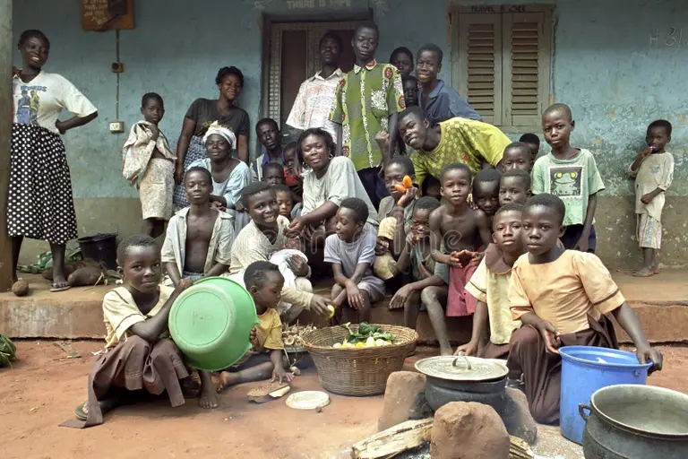
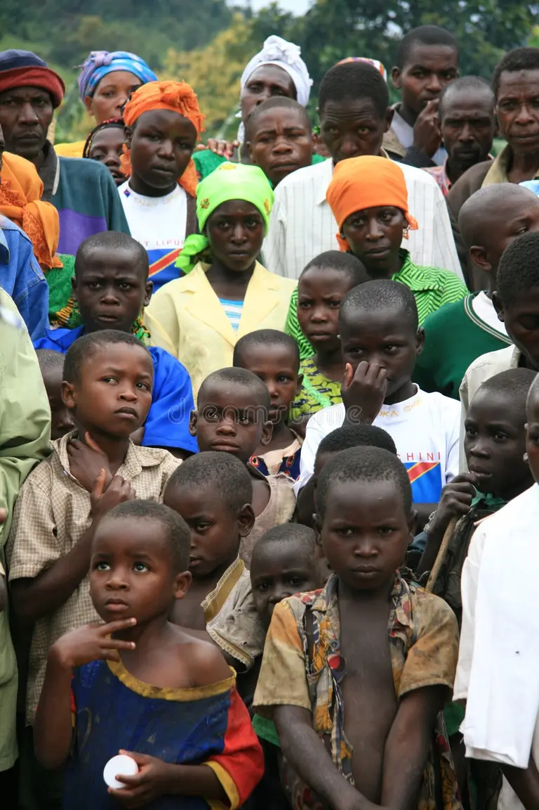
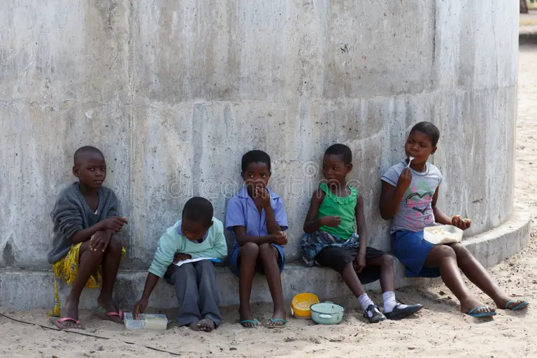
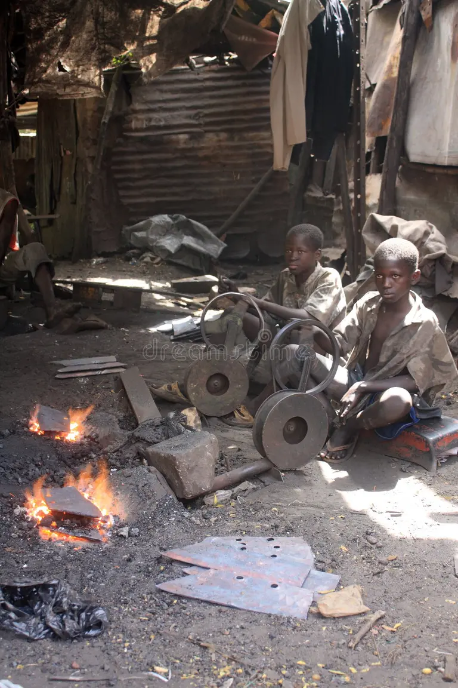
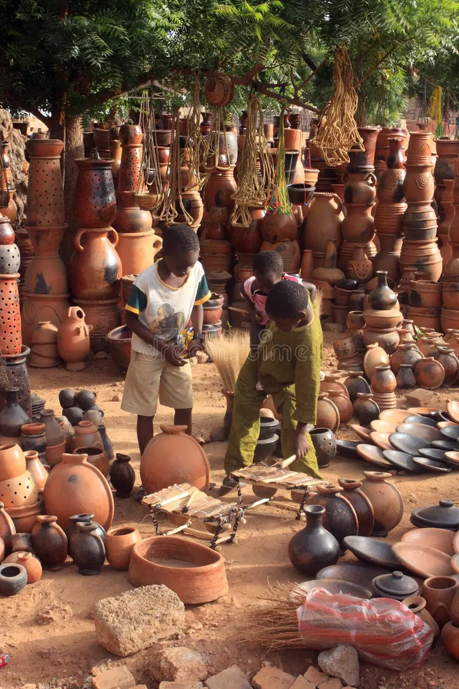
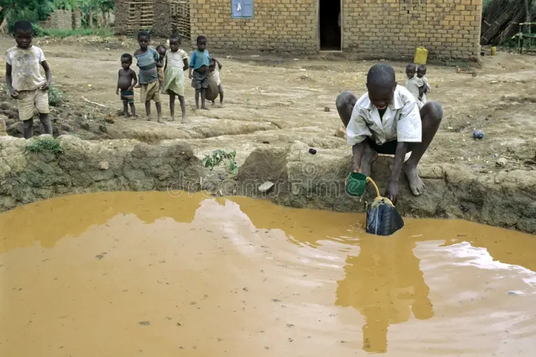

Empowering Lives,
One Family at a Time,Every family counts.
Every Child Deserves a Home
Join us in providing hope, shelter, and a future to vulnerable women and children across Africa. Your support protects homeless women, orphaned refugees, and abandoned mothers fighting to sustain their large families. Empower a family today.
DONATE NOW
Our Mission, Our Commitment
At Afriapp, we are committed to breaking the cycle of poverty by providing essential support, education, and resources to vulnerable women and children. Together, we can create lasting change and build stronger communities across Africa.
Those We Serve, Hearts We Heal, Lives We Touch.
Meet some of the women and children whose lives you can transform, Meet the faces of your impact, See the families waiting for your help.

Amara & Baby Joy
Single mother seeking shelter and support for her newborn. Needs assistance with housing, medical care, and basic necessities.

Grace & 4 Children
Widow caring for three young children. Lost her home and seeking stable housing and educational support for her kids.

Parentless Congolese Children Fleeing Conflict.
Fleeing Children in need of education, nutrition, and a safety. Dreams of becoming a teacher one day.

Streets Children
Living on the streets without parents or grandparents, these children urgently need medical care, school enrollment, and a safe place to call home.
Be Their Turning Point: From the Streets to the Safety.

Sarah, Age 6 and her siblings
Fleeing domestic violence, a mother left behind her two young daughters. These siblings urgently need emergency shelter and trauma counseling, a caring environment, and access to education.

Orphans and Widows
Every orphan deserves a home. Join us to rescue children from the streets and empower young mothers with special-needs children. Your donation delivers urgent Shelter, Medical Care, and Education.

Children Work
No child should work for survival. Instead of holding heavy tools, these young hands should be holding pencils and books. Together, we must protect them from exploitation, rescue them from the streets, and return them to where they belong: in a safe classroom, learning and playing.

Children Work
Protecting children from labor. Empowering them through education. Every child deserves a life free from hard work and exploitation. Help us rescue these young souls, provide them with a caring home, and open the doors to a brighter future through schooling.

Dirty Water
Dirty water is stealing their future. No child should be forced to drink water that makes them sick. For thousands of orphans and vulnerable families, every glass of water is a threat to their lives. Together, we can change this by providing clean, safe drinking water that restores health, dignity, and hope.
Your Donation Changes Lives
Every contribution, no matter the size, provides hope and creates opportunities for those who need it most.